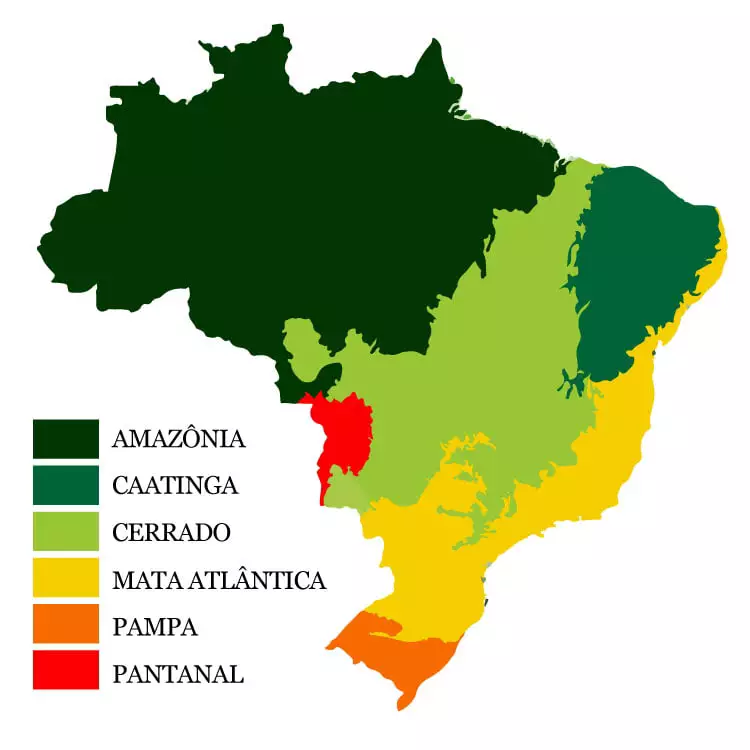

Biomas do Brasil
- Amazônia - Maior floresta tropical do mundo, essencial para o equilíbrio climático global e regulação do ciclo da água.
- Cerrado - Segunda maior formação vegetal do Brasil, conhecida como "caixa d'água" do país por abrigar nascentes de rios importantes.
- Mata Atlântica - Bioma costeiro com grande biodiversidade e ecossistemas frágeis, sendo um dos mais ameaçados pelo desmatamento.
- Caatinga - Exclusivo do Brasil, apresenta vegetação adaptada ao clima seco e abriga espécies únicas.
- Pampa - Bioma localizado no sul do país, caracterizado por campos naturais e pastagens, fundamentais para a pecuária.
- Pantanal - Maior planície alagável do mundo, com grande importância para a biodiversidade e o equilíbrio dos ecossistemas aquáticos.

Importância dos Biomas Brasileiros
- Manutenção da biodiversidade: Abrigam uma imensa variedade de espécies de flora e fauna, muitas delas endêmicas.
- Regulação climática: Influenciam a temperatura, os regimes de chuva e a absorção de carbono.
- Recursos naturais: Fornecem água, alimentos, madeira e outros produtos essenciais para a economia.
- Cultura e turismo: São essenciais para comunidades tradicionais e para o ecoturismo, gerando empregos e renda.